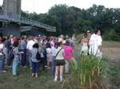
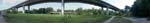
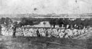
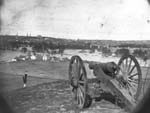
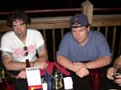

| page 5 of 5 |
| A Full Day in Richmond 8/3/2001 |
UCLA at Gettysburg Journal |
| page 5 of 5 |
|  |
 |
|
| The bridge is suspended under the highway and undulates up and down. Pretty wierd! | The group arrives on the island and stands at the site of the main gate looking out over the camp (to right of photo.) | Looking across the island from the north side. The remnants of the wall of the camp is just behind the sign (with bushes), main gate at left. The wall was very short - it was used as a "dead line" rather than a barrier. |
|  |
 |
 |
| View of the camp facing east. The front wall was at left, rear gate and wall at right. Cannon loaded with canister overlooked the camp from the hill at right to deter riots. About 1,000 men died of disease or starvation. | Photo of the camp at Belle Isle during the war, taken from the hill. | Belle Isle from the hill overlooking the camp, April 8, 1865. Photo by Alexander Gardner. |
|  |
||
| Dinner at a pizza place in the "Shockoe Bottom" topped a long day. Keith and Chris. | Richmond skyscraper from the patio of the restaurant. |